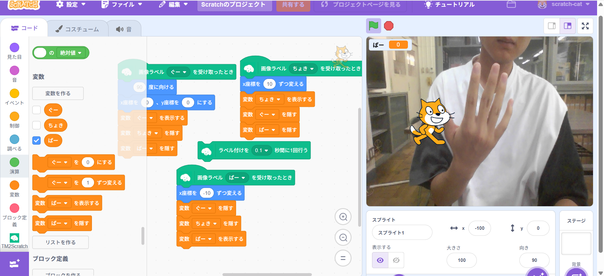
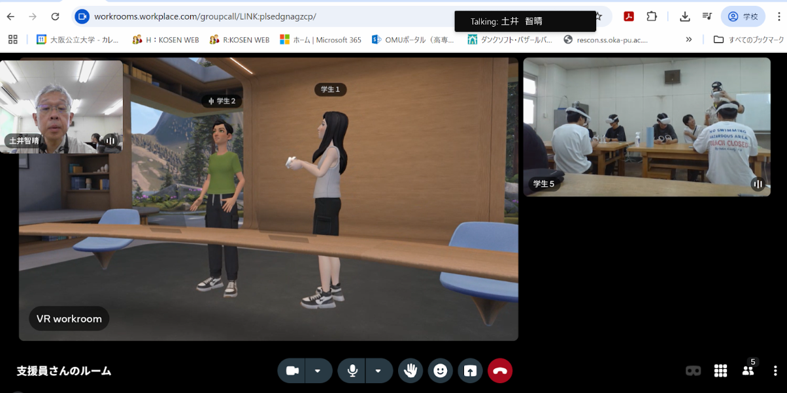
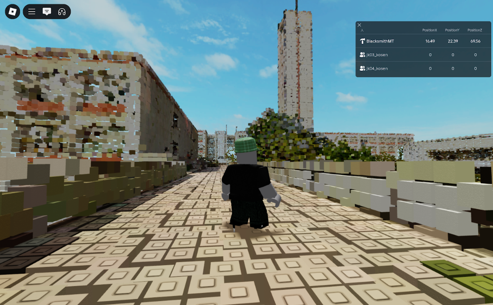

第2週目
2-1 2週目のレポートをHTMLで作る
1.内容
画像を添付するためにスクリーンショットをとってアップロードしたり、
中身を書き換えて自分用のホームページになるように編集した。
2.感想
htmlについてもっとしって自分で一からホームページを作れるようになりたいなと思った。
レポートホームページを作っているけど、触っている部分が少なくてもっといろんなところ触ってみたいと思った。
気になって自分で調べてみて最初の長いコードの部分は文字のフォントを決めたり、見た目を決めたりしているコードだと分かった。
3. 2週目が完成した人は1週目のレポートも完成させる
2-2 機械学習体験

1.内容
AIの仕組みについて学びAIはニューラルネットワークという人間の脳とにたような
構造からつくられているということがわかった。AIに学習させるという体験をして
じゃんけんの写真を読み込ませて学習させたけど１００枚の写真でやってみたけど
精度が悪くAIを学習させるには本当に大量の情報が必要であることが分かった。
2.感想
じゃんけんの手を学習させてみて１００じゃ全然当ててくれなくて試しに
３００枚でやってみると急にめっちゃ当ててくれるようになってAIに
学習させるのってこんだけの情報量が必要なんだなと思った
2-3 VR（バーチャルリアリティー：Virtual Reality）の体験
 
1.内容
VRゴーグルを装着し、ロブロックスの中の世界を探検した。
ロブロックスの中に再現された公大高専を探検し時計塔に上ったり、
教養棟の中を探検したりした。ワークルームでアバターを自分で編集した。
2.感想
初めてVRゴーグルをかぶって操作をしたからとても楽しかった。
初めての感覚で上を見てみたり下を見てみたりするとそれに合わせて
視点も上に行ったりしたに行ったりして実際に
その場にいるような感覚を味わうことができて面白かった。